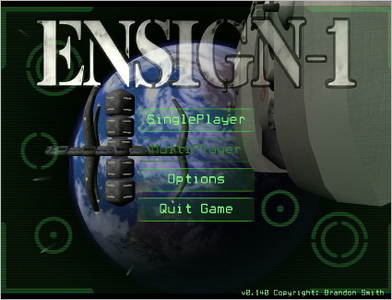
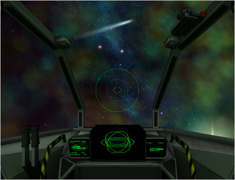

Ensign-1
Archivierte Anleitung
Dieser Artikel wurde archiviert, da er - oder Teile daraus - nur noch unter einer älteren Ubuntu-Version nutzbar ist. Diese Anleitung wird vom Wiki-Team weder auf Richtigkeit überprüft noch anderweitig gepflegt. Zusätzlich wurde der Artikel für weitere Änderungen gesperrt.
Zum Verständnis dieses Artikels sind folgende Seiten hilfreich:
Ensign-1  ist ein kommerzieller Weltraumshooter, welcher sich noch in der Entwicklung befindet.
ist ein kommerzieller Weltraumshooter, welcher sich noch in der Entwicklung befindet.
In einer fernen Zukunft bedrohen Aliens die Zivilisation. Durch den Einsatz von Raumschiffen, neuen Waffensystemen und Kampfgeschick gilt es das Blatt zu wenden und die insektenähnlichen Wesen zu besiegen...
|  |
| Hauptmenü |
|  |
| Spielszene |
Installation¶
Desura¶
Das Spiel kann über die Vertriebsplattform oder den Client zur Spieleliste hinzugefügt und gestartet werden [1].
Hinweis:
Das Spiel befindet sich noch in der Entwicklung. Momentan existiert noch kein Multiplayer-Modus.
Einstellungen¶
Aus dem Hauptmenü heraus erreicht man über "Options" das Einstellungesmenü. Hier können unter anderem Einstellungen zum Schwierikeitsgrad und der Darstellung (z.B. Vollbild- / Fenstermodus) vorgenommen werden.
Tastenkürzel¶
| Tastenkürzel | |
| Taste(n) | Funktion |
| W + A + S + D | Flugmanöver |
| Q / E | Rollen |
| ↑ / ↓ | Anstellwinkel |
| ← / → | Links / rechts steuern. |
| Laser abfeuern. | |
| Strg | Rakete. |
| 1 | Schildlaser |
| 2 | Normaler Laser |
| 3 | Raketen scharf machen / entschärfen |
| T | Nächstes Ziel anvisieren. |
| Tab ⇆ | Pilotenmodus (verlassen) |
| W + A + S + D | |
| Sprung | |
| 1 | Plasma-Pistole |
| 2 | Plasma-Gewehr |
 | Waffe abfeuern. |
 | Zoomen |

Infobox¶
| Ensign-1 | |
| Originaltitel: | Ensign-1 |
| Genre: | Shooter |
| Sprache: | |
| Veröffentlichung: | 2012 |
| Publisher: | Only Human Studios |
| minimale Systemvoraussetzungen: | - |
| Medien: | Download |
| Strichcode / EAN / GTIN: | - |
| Läuft mit: | nativ |

{kind=link}
- Erstellt mit Inyoka
-
 2004 – 2017 ubuntuusers.de • Einige Rechte vorbehalten
2004 – 2017 ubuntuusers.de • Einige Rechte vorbehalten
Lizenz • Kontakt • Datenschutz • Impressum • Serverstatus -
Serverhousing gespendet von